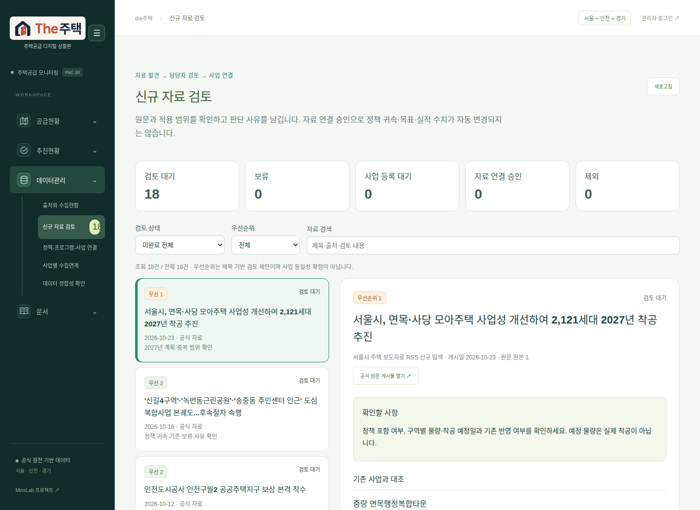
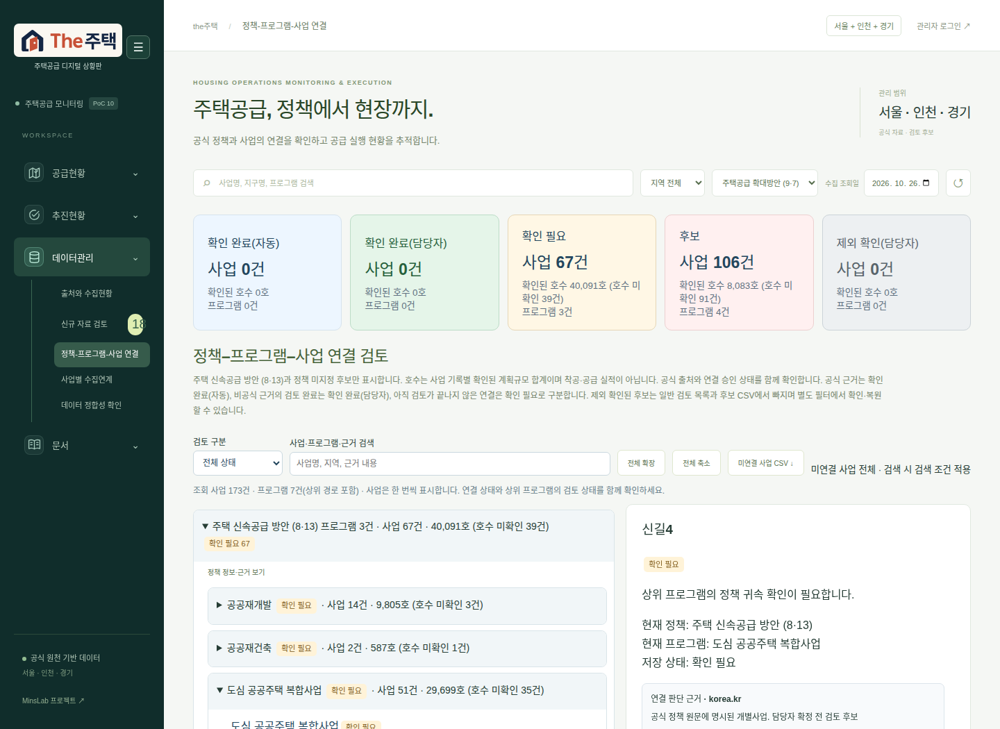
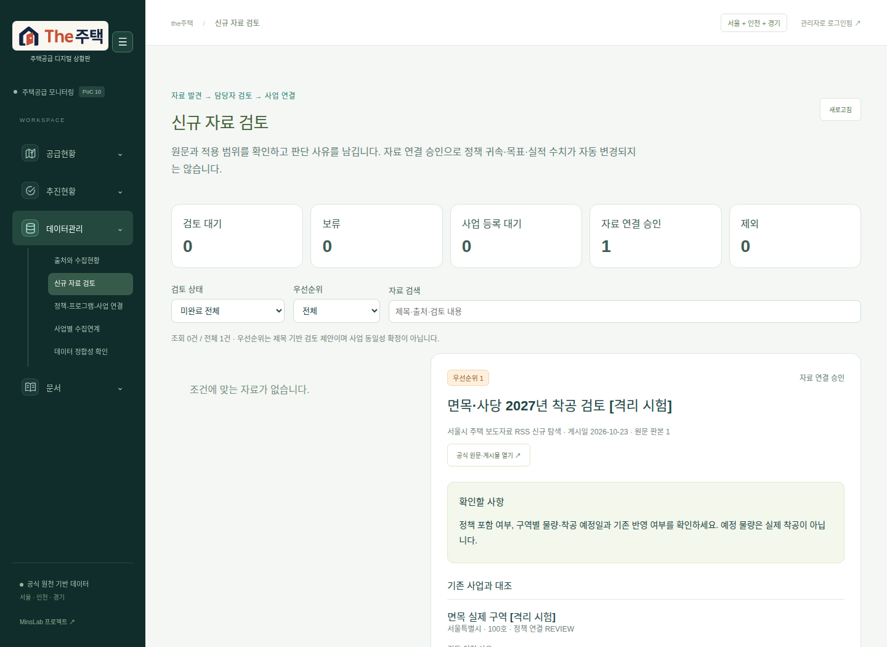

신규 자료 검토
2026.10.26 · 운영 검토함 열기
데이터관리 → 신규 자료 검토. 신규 수집 게시물은 별도 CSV 등록 없이 검토함에 나타납니다. 현재 대기 18건: 우선순위 1은 1건, 2는 3건, 3은 8건, 참고 분류는 6건입니다.
담당자 사용 순서
- 관리자 로그인 후 검토 상태·우선순위·검색으로 대상을 선택합니다.
- 원문 게시물, 확인할 사항, 기존 사업 후보와 저장된 판단 사유를 대조합니다. 사업명 유사 후보는 자동으로 선택하거나 확정하지 않습니다.
- 기존 사업의 정책 귀속은 ‘기존 판단 사유·정책 연결 검토’로 이동해 확인합니다. 다른 정책에 속한 사업도 그 정책 범위에서 열립니다.
- ‘자료 연결 승인’은 대상 정책·기존 사업·담당자·판단 사유·원문 확인을 입력해야 저장됩니다. 복수 기존 사업을 선택할 수 있습니다.
- 대응 사업이 없으면 구역별 이름을 입력하고 ‘검토 승인 · 사업 등록 대기’를 선택합니다. 검토 대상으로 채택한 기록을 남기고 미완료 대기 목록에 유지합니다.
- 보류·제외 및 판단 변경은 이력에 남습니다. 원문 새 판본 또는 다른 화면의 연결 해제는 재검토 대기로 표시됩니다.
승인의 범위
자료 연결 승인은 해당 자료와 기존 사업의 연결을 확정합니다. 정책 귀속 확정·신규 사업 생성·호수·목표일·실제 사건의 입력은 각각 후속 절차입니다. 특히 사업 등록 대기 승인은 사업 생성이나 수치 반영 완료를 뜻하지 않습니다. 이 검토함은 기사 제목의 숫자를 실제 착공·공급 실적으로 전환하지 않습니다.
검증
관련 테스트 68개와 접속 경계 테스트 5개 통과. 운영 화면의 대기 목록·우선순위 필터·신길4의 8·13 정책 검토 화면 이동을 확인했습니다. 승인 → 보류 → 사업 등록 대기 저장과 이력은 격리 SQLite에서 실제 API를 통해 브라우저 검증했습니다. 운영 검토 기록·승인 감사 기록은 모두 0건으로, 실제 후보를 대신 승인하지 않았습니다.
기능 테스트 · 로그인·동일 출처 요청 테스트 · 브라우저 결과 · 운영 상태·코드 해시

기존 정책 연결 검토 이동

격리 시험: 자료 연결 승인
